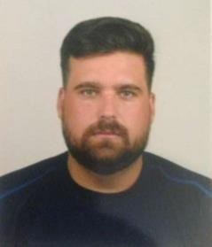

| PERSONAL INFORMATION |
Valerio Marini de Angelis
Triq L-Alwetta C&M FL 1, Mosta, 4504 Mosta (Malta)
+35699425039 +393495976632
vmarini1987@hotmail.com
Sex Male | Date of birth 06/03/1987 | Nationality Venezuelan, Italian |
 |
| WORK EXPERIENCE |
| 05/11/2018–Present |
Supervisor
Valetta (Malta)
To assist the management team.
Coordinating and controlling one of the three areas in the restaurants, kitchen dining area, front
counter.
Maintaining consistency in all areas of QSC and high standards. |
| 15/11/2015–07/04/2017 |
IT
AG Consultory, Caracas (Venezuela)
Installation, configuration and technical support of windows, software and drivers, analysis and
solution of antivirus servers, analysis of traffic in and out of the LAN network, modifications of
navigation policy in the network, backup servers analysis. |
| 10/04/2010–31/12/2011 |
Technical Support
High Diplomatic Studies Institute Pedro Gual, Caracas (Venezuela)
Windows, software and driver’s installation.
Installation of LAN and WAN networks, printer configuration.
Information Backup and Pc`s Formatting.
Technical support for internal staff.
Logistics and procurement for different institution events.
Official web management, loading and changing web site content like different articles and news
using joomla editor. www.institutopedrogual.edu.ve
Maintenance of hardware in the different work stations of the institution |
EDUCATION AND TRAINING |
| 2011 |
Computer Science Security
High Diplomatic Studies Institute Pedro Gual 36 h., Caracas (Venezuela) |
| 2007–2010 |
University Higher Technician in Computer Science
“Instituto Universitario de Tecnología Venezuela (IUTV)”, Caracas (Venezuela) |
| 2001–2006 |
High School Bachelor’s Mention: Proccessing and Data
Administration (APD)
“Unidad Educativa Instituto “San Antonio”. U.E.I.S.A, Caracas (Venezuela)
|
| PERSONAL SKILLS |
| Mother tongue(s) |
Spanish
|
| Foreign language(s) |
Italian C1
English A2
|
| Communication skills |
I like to see myself as a responsible, fast learner, highly motivated and goal oriented person, always
open to experience new opportunities. I like being challenged and learn from other people’s feedback
so I can grow personally and professionally. Throughout my professional career I’ve experienced
different challenges and I’ve always found a way to succeed thanks to my perseverance
|